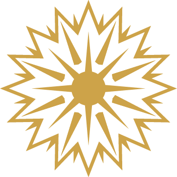
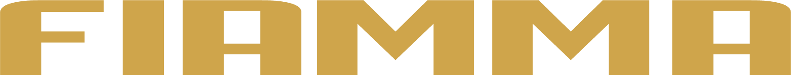
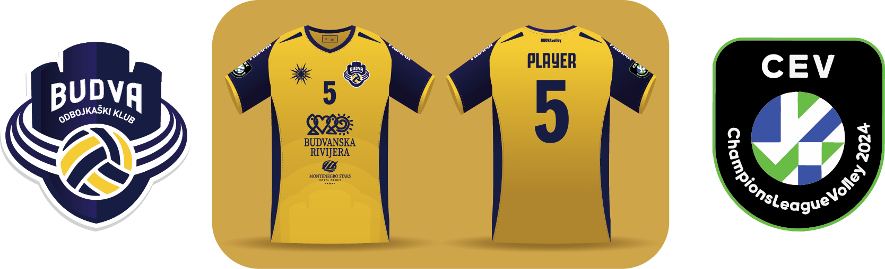
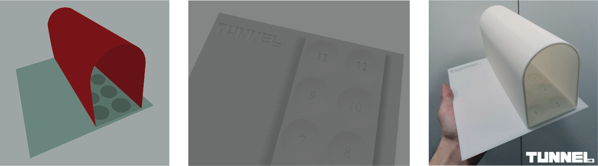

Projekat na kojem trenutno radim se zove Fiamma Sportswear. To će da bude kompanija koja će se baviti proizvodnjom sportske opreme. Kao cilj sam postavio kvalitet i pristupačne cene. Povezao sam se sa nekoliko fabrika koje bi mi u prvih nekoliko godina dosta pomogle oko odabira materijala, vezova, načina izrade. Nadam se da je ovo početak jedne lepe priče.
Fiamma u prevodu sa italijanskog jezika znači plamen, žar, iskra. Logo je apstraktna eksplozija koja na prvi pogled izgleda kao Sunce. Tipografija je nastala modifikovanjem fonta Juventus. Trudio sam se da ne komplikujem sa dizajnom i mislim da logo, kao i tipografija mogu da postanu veoma prepoznatljivi, bar na ovim prostorima.
Od septembra 2024. godine ću raditi sportsku opremu za odbojkaški klub Budva. OK Budva time postaje prva ekipa koja će na grudima nositi logo moje kompanije. Ovde možete videti primer domaćeg dresa za sledeću sezonu.
Zajednički projekat na fakultetu pod imenom Tunnel. Tunnel je društvena igra za 4 ili više osoba. Na izradi projekta je pored mene učestvovalo još 3 studenta: Anđela Vasiljev, Veljko Maletić i Aleksandra Anđić. Predmet za koji je rađen ovaj projekat se naziva Vizuelni Identitet kod profesorke Isidore Nikolić. Logo i tipografija su, kao i sve ostalo u ovom projektu, rađeni kolektivno, svako je doprineo na svoj način. Ideja je došla kad smo shvatili da se današnja deca više ne igraju sa klikerima, pa smo pokušali da ih integrišemo u našu igru. Iskombinovali smo opšte poznatu igru "Vešala" sa klikerima i došli do ideje za Tunnel.
Dizajn table kao i samog tunela smo radili u Blenderu. Nakon završetka idejnog rešenja smo naše skice poslali na 3D štampanje. Prototip je urađen na najbolji mogući način, baš onako kakvim smo ga i zamislili. Naš trud je nagrađen devetkama i ponosni smo na našu društvrnu igru :)
